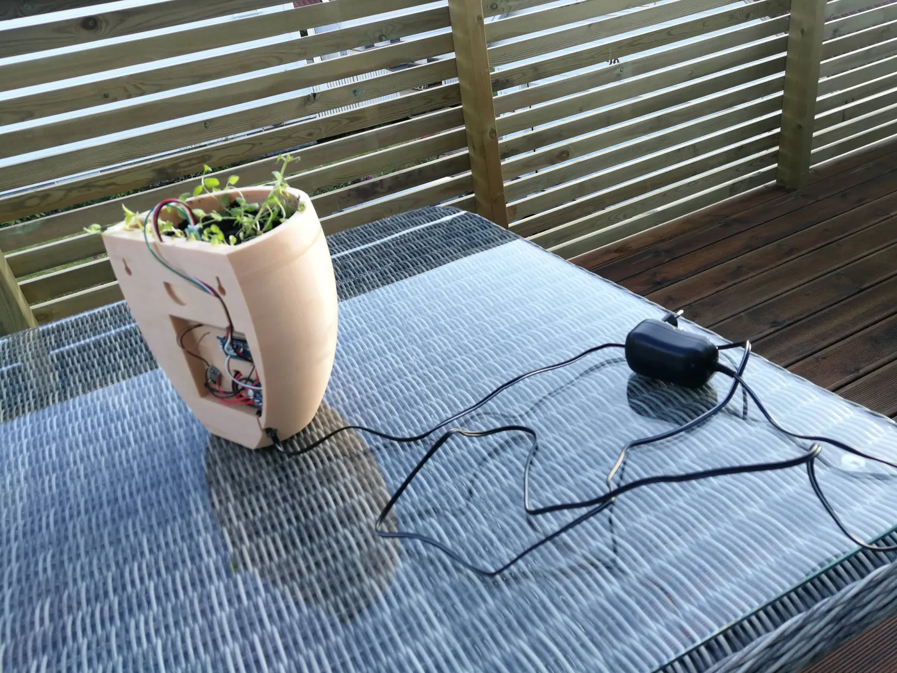
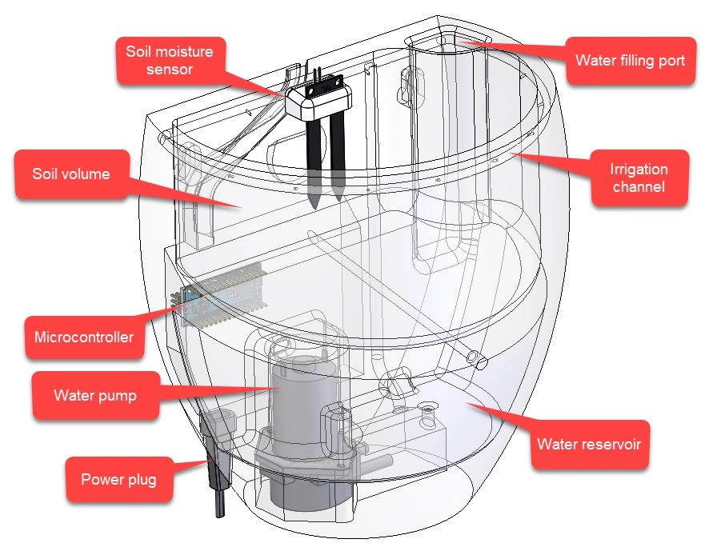
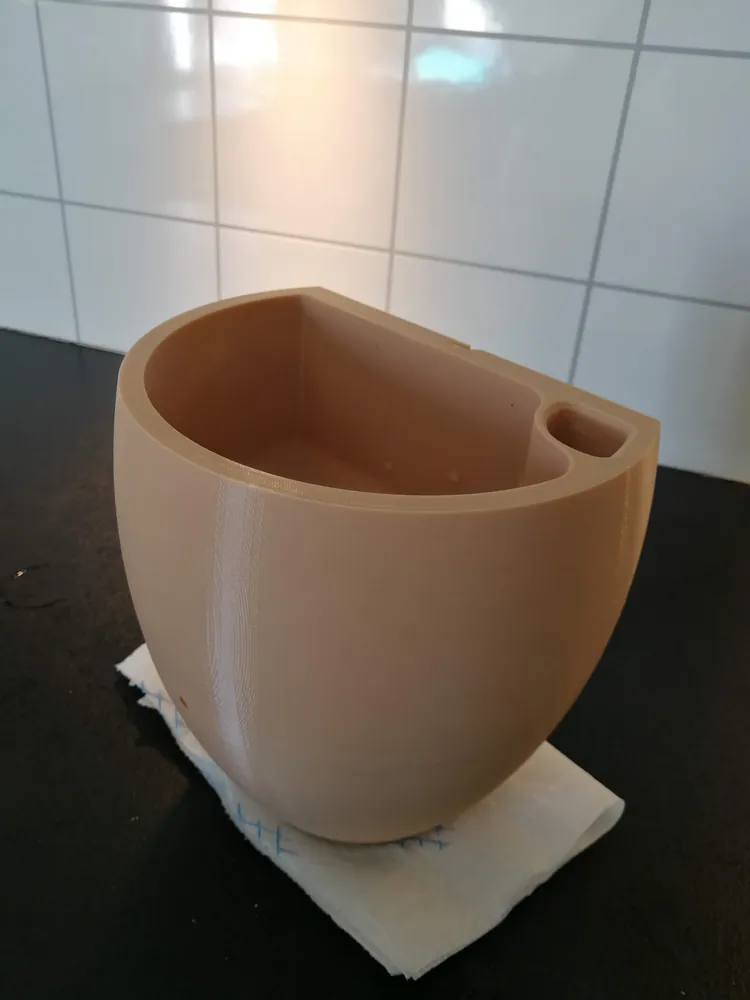
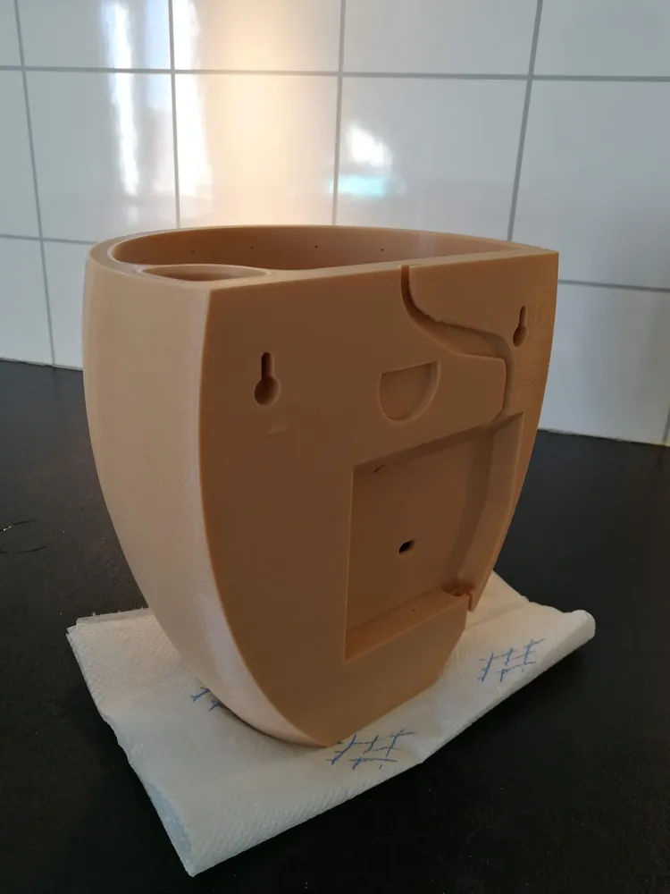
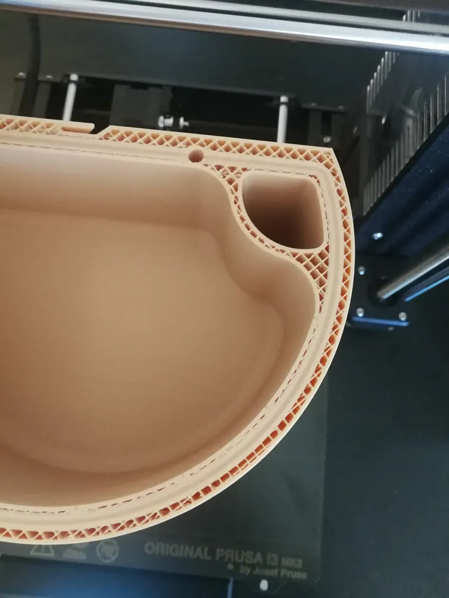
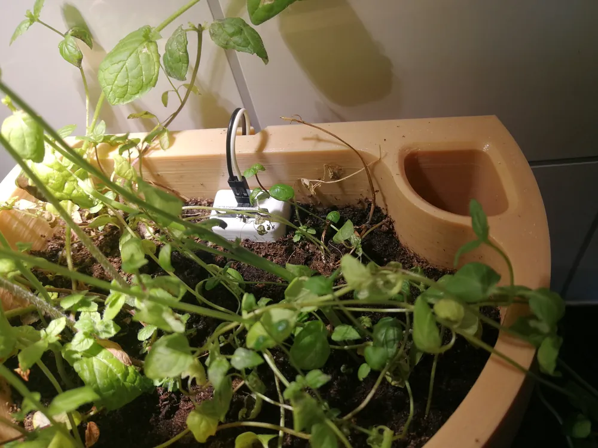

2019
Self-watering planter
A planter that waters itself. A soil-moisture sensor detects when the plant needs water, and a pump tops it up from a built-in reservoir.

The pot is 3D-printed, and an Arduino microcontroller controls the watering.

What I learned
Soil-moisture sensors are unreliable. None of the ones I tried worked well, not even Adafruit's capacitive sensor, so I shelved the project. A future version would probably have to measure moisture indirectly, for example by weighing the pot with load cells.




Build photos.